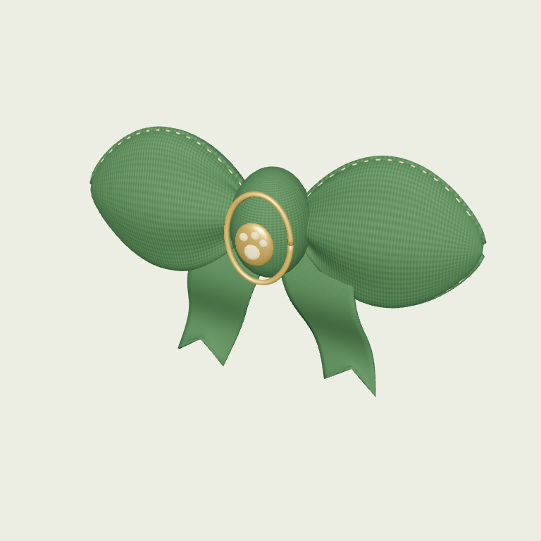
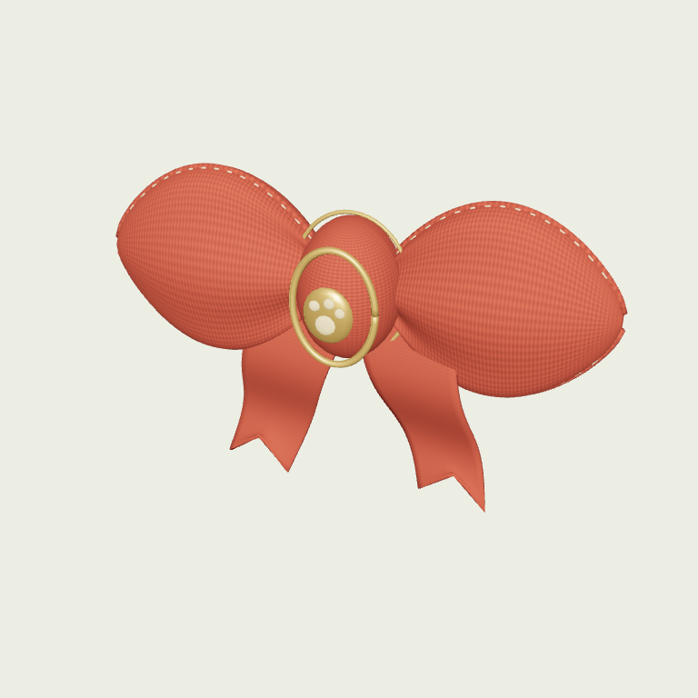
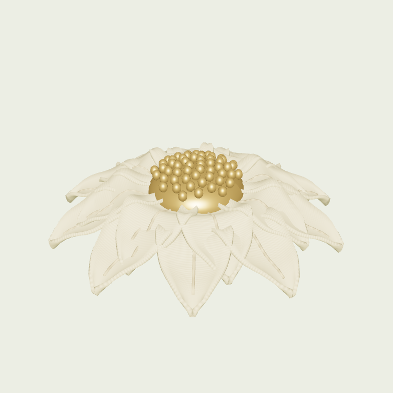
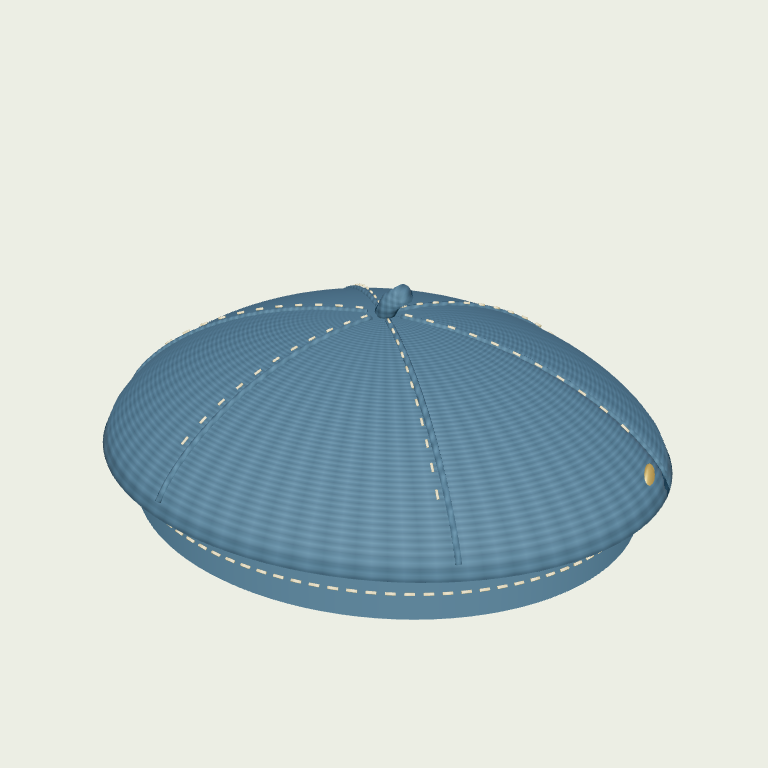

PAIT ISLAND / WARDROBE V1每一件，都有自己的模型。
四件饰品分别交付可编辑 Blender 文件、独立 GLB 和真实模型渲染封面。商品封面与游戏中加载的是同一资产。

苔绿领结
双侧立体折叠布面、卷边、车线、开叉飘带、包布结、黄铜徽扣与浮雕爪印。自制编织颜色及法线贴图。
Blender 源文件 · GLB
14,728 三角面 · 351 KB · 3 个材质批次

珊瑚领结
独立珊瑚色织物资产，中央增加细金边，保留缝线、折痕、浮雕徽扣与厚度。单独保存和导出。
Blender 源文件 · GLB
15,312 三角面 · 364 KB · 3 个材质批次

雏菊发饰
18 枚双层织物花瓣，每片具有厚度、弯曲与中脊；55 枚花芯颗粒和背面金属夹独立建模。
Blender 源文件 · GLB
22,120 三角面 · 528 KB · 3 个材质批次

雾蓝贝雷帽
有厚度的六片帽冠、立体拼缝、逐针车线、内圈汗带、帽顶短柄和侧面黄铜标。带编织颜色及法线贴图。
Blender 源文件 · GLB
18,616 三角面 · 435 KB · 3 个材质批次
制作与接入
复现：blender --background --python scripts/blender/build_wardrobe.py。源文件保留具名部件；导出时按材质合并，所有贴图内嵌，不依赖外部素材。尺寸以宠物体高为基准，GLB 为 Y 向上、Z 向前。
运行时在模型加载姿态下，先计算蒙皮后的真实表面，再建立饰品到头部／颈部骨骼挂点的相对变换。行走、跑步、休息时沿用骨骼父子关系；不逐帧追赶坐标。定制模型尚未完成适配，商城明确禁用穿戴。当前饰品采用骨骼挂接，未制作实时布料模拟。